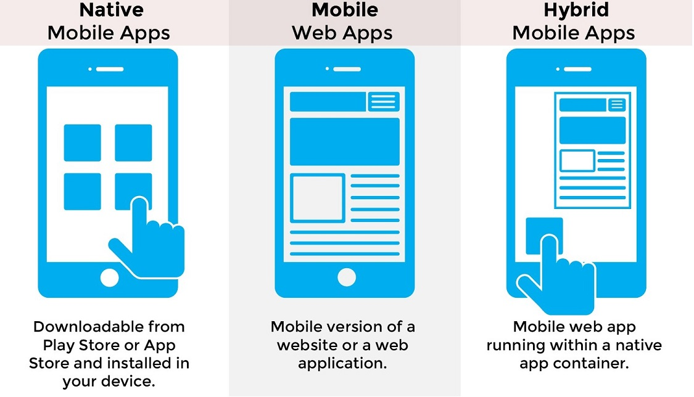
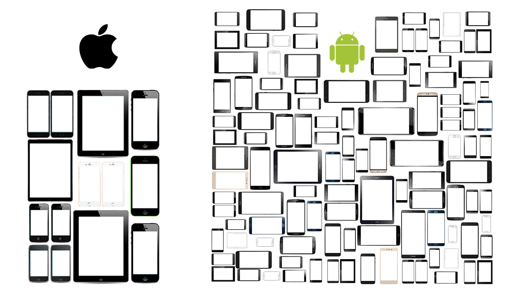
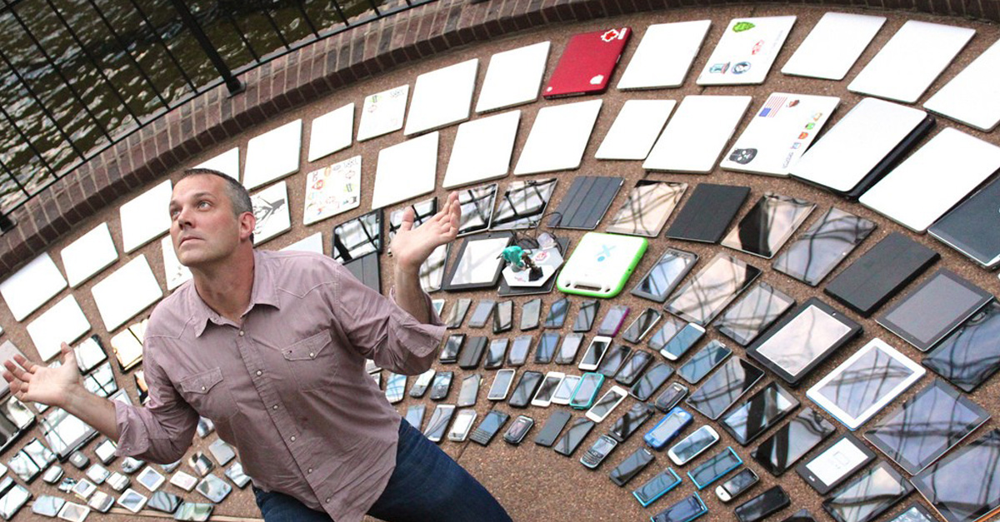

Tipos de Aplicativos

Fonte: 7th Media Digital
Tipos de Aplicativos
Tipo App
Tecnologia
Nativo
Swift (iOS), Java (Android)
Híbrido
Cordova, Ionic, Kony, React Native
Web
HTML5, JavaScript, CSS3
Desafios
Diversidade de Interfaces

Fonte: Smashing Magazine
Compatibilidade de SO

Fonte: Indiumsoft
Performance
Impacto de Performance
Consumo de Bateria
Transferência de Dados
Porque não subestimar
os testes mobile?
Como não subestimar os testes mobile...
Aprendendo a utilizar o Sistema Operacional do dispositivo
Reduzindo vícios de usabilidade
Orientação da tela que o App deve executar
Ordenação da tabulação nos formulários
Navegar entre telas com o teclado ativo (Contexto da activity)
Como não subestimar os testes mobile...
Validando em diferentes dispositivos e versões de SO
Botão voltar do dispositivo fechava a aplicação
Utilizar um emulador para validar outros devices
Tendo paciência com aplicação do layout
Como não subestimar os testes mobile...
Simulando o comportamento de localização em um dispositivo real
Nível de precisão do mapa pode sobrecarregar o dispositivo
Tratamento das chamadas assíncronas -
Sem conexão com a internet, Wi-fi, 4G, 3G, Roaming e Tim
Como não subestimar os testes mobile...
Splash Screen parava o som
Automatizar deploy apk e ipa
Tempo de aprovação do aplicativo nas lojas
Controle das Push notifications
Meios de pagamento
Alteração do idioma do App
Obrigado!
por
Raphael Rodrigues